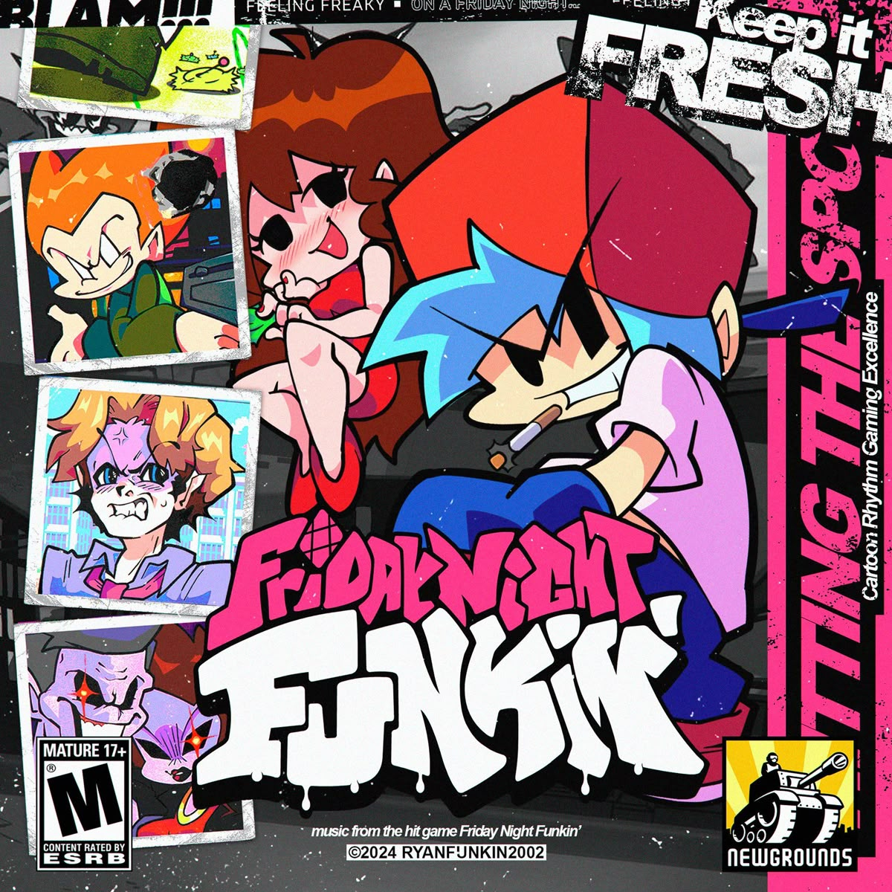
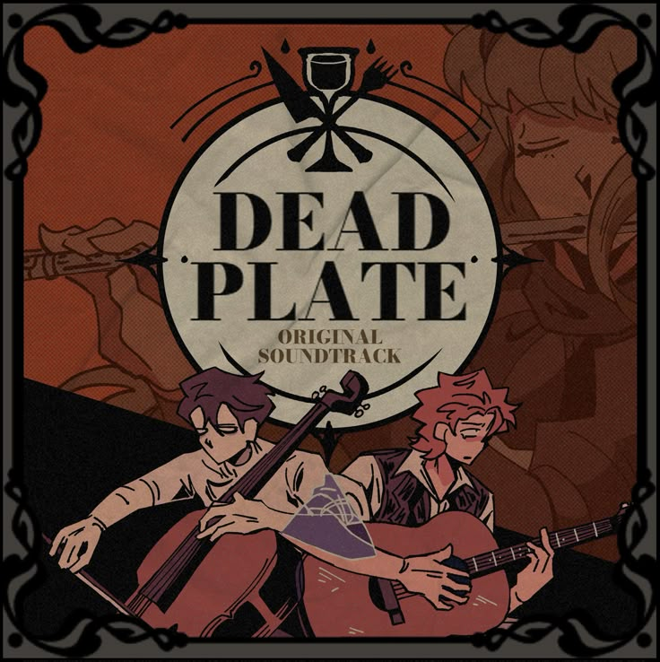
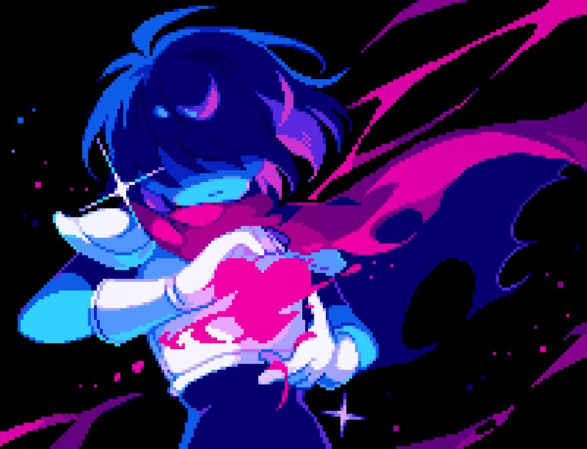
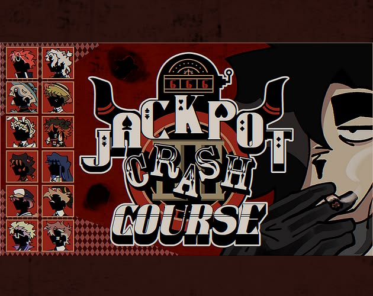
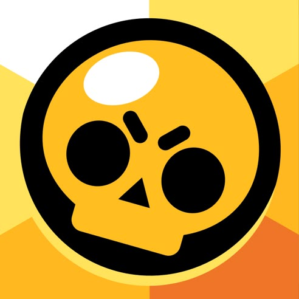
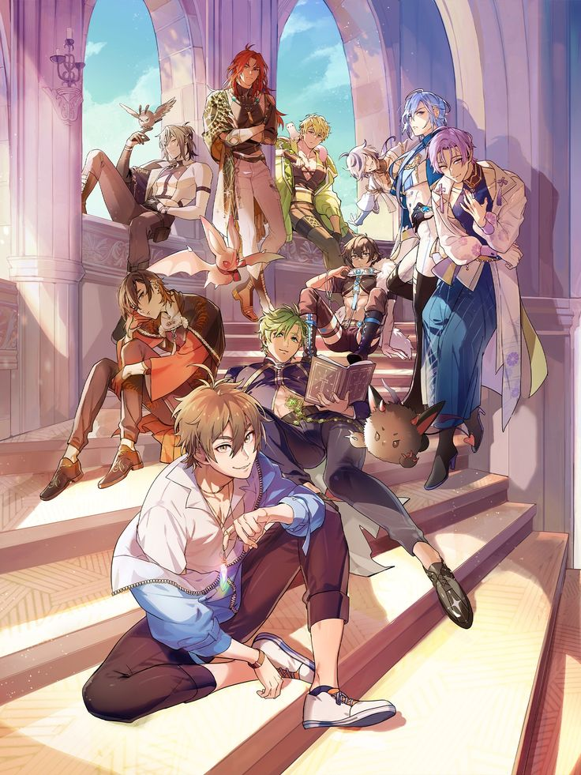
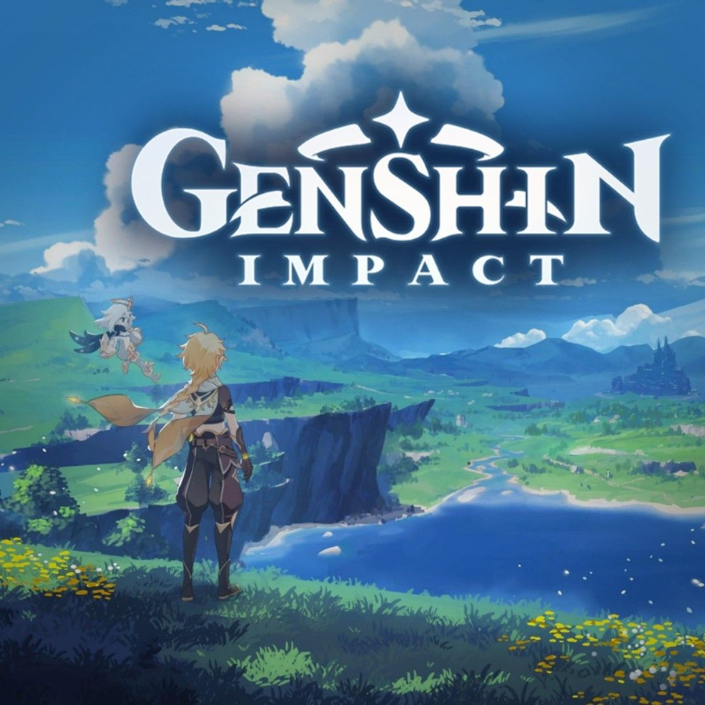
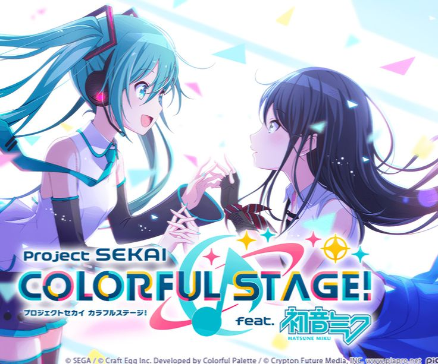

Friday Night Funkin
Literalmente imposible no pensar en ti, se cuando adoras jugarlo, inclusive te eh visto jugarlo ^w^ Además, gracias a Fnf pude hacerme esos stickers que tanto te enamoraron muejejeje (⸝⸝> ᴗ•⸝⸝)

Date Plate
A pesar de que nos gusta a ambos, creo que casi nunca compartimos el gusto, en parte porque ya se me olvidó toda la historia 😞. Pero se cuanto te gusta <3

Deltarune
Nuevamente ¿Debo explicarlo? Literalmente para mi Deltarune ya lleva tu nombre a lado en etiqueta grandota, gracias a ti pude saber un poquitito más del juego, ya que amo escucharte hablar de lo que te gusta ^w^. Solo puedes venir tu a mi mente en cuanto veo o escucho algo relacionado al juego.

Jackpot Crash Course
Sería pecado ver algo de JCC y no pensar en ti corazón, eh visto cuando adoras el juego, los personajes, como literalmente te esfuerzas en buscar fotos de ellos (lo leí en tu canal una vez muejeje). La verdad siempre regresas a mi cabecita cuando me sale algún edit del juego, del cual de echo ya me estoy viendo videitos porque gracias a ti, lo conocí y me llamó la atención (๑ > ᴗ < ๑)

Brawl Stars
Fan de bodrio estrellas tenías que ser JJSKAJSKA, a pesar de que quizá dijiste que actualmente ya no tengas tiempo de jugarlo, se que en su momento fue uno de tus vicios, uno de los que más jugabas en tu celular, queriendo subir a tus mains como Chester, Poco, y obviamente Buster (˵ ¬ᴗ¬˵)

Sally Face
En definitiva no se nada de Sally Face, quizá tampoco te eh escuchado hablar del juego, aunque debo admitir que si tu quisieras compartir tu conocimiento conmigo 🤓 no me quejaría. Aún así, no me impide saber que es uno de los juegos que te gustan ^^

Nu Carnival
Bueno JAKSJKJAKS, basicamente descubrí la existencia de este juego por error tuyo de mostrarme la pantalla de tu celular y ver un tipo bien gei en la pantalla casi encueraduchis, pero, pues te gusta mucho no? Hasta estás (o estabas) en un grupo de stickers de ellos (creo) así que, Nu Carnival tiene bien merecido su puesto aquí ya que solo pienso en ti al ver algo relacionado.

Genshin Impact
Tú relación tóxica (dicho por uste mismo), no soy fan del Genshin Impact, pero siempre que escucho o veo algo relacionado al juego, no hay otra persona en la que piense, más que en ti, o cada vez que me salen en mi para ti edits de tus personajes favoritos :)

Project SEKAI
Quizá pienso en ti de manera general cuando oigo acerca de los juegos de ritmo, pero Project SEKAI es otro de ellos donde eres tu el primero que viene a mi mente al escuchar de el, hasta te eh visto jugarlo (y si no era ese, era otra versión de juego de ritmo). La verdad, siempre admiré la manera en que tienes tanta habilidad para jugar jueguitos de ritmo, es algo que me gusta mucho de ti <3 tu eres muy pro.